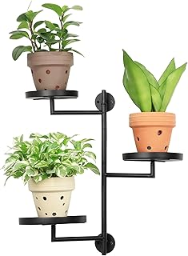

At the core of the AetherBloom risers' appeal is their unassuming elegance. Crafted from crystal-clear acrylic, these pedestals virtually disappear, allowing the plants themselves to remain the undisputed focal point. This transparency is not merely a material choice but a deliberate design philosophy; it creates an illusion of floating greenery, lending an ethereal quality to any botanical arrangement. In an era where visual clutter is often a detractor, these risers contribute to a clean, architectural aesthetic, effortlessly integrating into various decor styles from minimalist contemporary to eclectic bohemian. They subtly introduce structure without imposing visual weight, ensuring that light can permeate through, illuminating each plant from multiple angles and enhancing its inherent beauty.
Beyond their aesthetic contributions, the AetherBloom risers demonstrate commendable functionality. The high-quality acrylic is robust, providing a stable foundation for a variety of pot sizes and weights without exhibiting any signs of bowing or cracking under typical use. Their smooth, non-porous surface makes cleaning a remarkably simple task, requiring little more than a gentle wipe to maintain their pristine clarity—a significant advantage over materials prone to water stains or residue build-up. Practically, elevating plants improves air circulation around foliage, reduces the risk of root rot from inadequate drainage, and crucially, ensures lower-sitting plants receive ample sunlight. This thoughtful utility transforms a simple accessory into an indispensable tool for plant enthusiasts seeking to optimize both the health and visual impact of their indoor botanical collections.
These crystal-clear acrylic risers elegantly elevate plant pots, transforming displays into luminous, multi-tiered botanical arrangements. They enhance vertical space utilization, allowing every leaf to receive optimal light and present a more curated aesthetic.
View Current Price| Material | High-Grade Crystal-Clear Acrylic |
| Key Feature | Multi-tiered vertical plant display |
| Aesthetic Style | Modern Transparent Elegance |